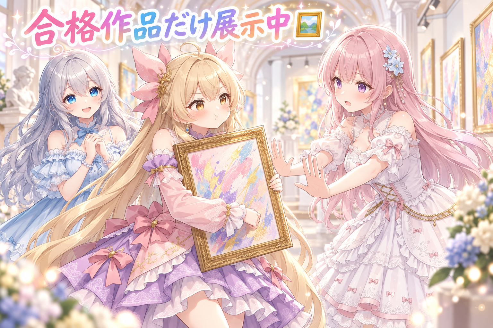
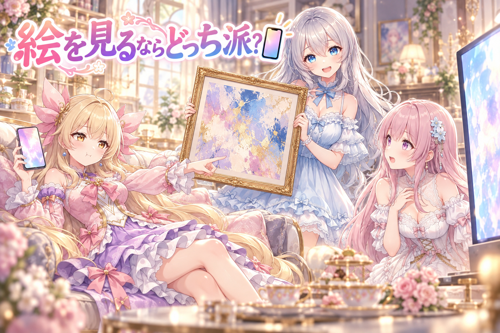

📌 3行まとめ
- 確認（レビュー）を通った画像だけを選んで、SNS 用とギャラリーに公開した
- 少し前に作ってレビュー待ちになっていた分も、確認が済んだので一緒に並べた
- 画像の指示文（プロンプト）配布のバックナンバーも、レビューOKの分だけ更新した
ルピナス （笑顔）
こんにちは、AIBS の時間です。前回は、作業の相棒役の AI に引き継ぎ書を渡したり、届かなかった指示に慌てたりと、裏方っぽい回だったね。
アイリス （呆れ）
そうそう、引き継ぎ書が分厚すぎて、あたしまで眠くなったやつ！ 今日はもっと目に見えるやつがいい！
フィオナ （ドヤ顔）
ご安心ください、アイリスちゃん。今日はちゃんと目に見えます。なにしろ画像を並べる回ですから。
ルピナス （ウインク）
ただし並べられるのは、確認に合格した子だけ。今日はその「合格」の話をしていくよ。
1. 🖼️ 合格した画像だけ、ギャラリーへ

この日は、確認（レビュー）を通った画像を SNS 用に公開し、サイトのギャラリーにも反映しました。ギャラリーの更新は10件あまり。数日前に作ってレビュー待ちになっていた分も、確認が済んだのでこの日にまとめて公開しています。 作ったものを全部すぐに出すのではなく、「一度見て、OKだったものだけ」を表に出す。地味ですが、ここがこの流れのいちばん大事なところです。
ルピナス （笑顔）
というわけで今日はコント仕立てで。ここは開館直前の美術館。私が館長、フィオナが学芸員さん、アイリスは……お客さん第一号ね。
アイリス （大笑い）
お客さんじゃなくて搬入係やりたい！ はいっ、この額縁、飾りまーす！
フィオナ （びっくり）
お待ちください、搬入係さん。その作品、確認の印がまだ付いておりません。
アイリス （怒り）
えー！ かわいいからいいじゃん！ あたしが今見た！ はい確認済み！
フィオナ （ふつう）
お客さまが見た、は確認には含まれません。当館では、きちんとチェックを通った作品だけを展示する決まりなんです。
ルピナス （ふつう）
学芸員さんの言う通り。並べる前に一回見ておくと、あとで「あれ、これ出しちゃってよかったっけ？」ってならずに済むからね。
アイリス （考え中）
むー……じゃあさ、こっちの数日前の作品は？ ずっと倉庫で待ってたやつ。
フィオナ （笑顔）
そちらは今朝、確認が済みました。どうぞ、いちばんいい壁へ。
アイリス （びっくり）
待ってた子のほうが先に出世した！？
ルピナス （大笑い）
作った日と飾る日がずれても、合格の印さえあれば後からちゃんと並べられる。それが今日いちばん大事なところ。
アイリス （ドヤ顔）
わかった！ じゃあ最後に、館長の顔写真を入口にドーンと飾ろう！
フィオナ （無表情）
……館長の顔写真は、確認の結果、不合格です。
ルピナス （衝撃）
えっ、私だけ落ちたの！？
📝 ポイント（初心者向け解説・技術メモ・まとめ）
- 初心者向け解説：お店に並べる前に必ず味見して、おいしかったパンだけを棚に出すパン屋さんみたいなもの。作った順ではなく、確かめた順に並べるのがコツです🥐
- 技術メモ：生成→レビュー→公開の3段に分け、公開処理はレビュー合格の印が付いたものだけを対象にする。作成日と公開日がずれても、合否で管理していれば数日前のバッチを後からまとめて反映できる（今回も数日前の分をこの日に公開）。
- ひとことまとめ：表に出すのは「作ったもの」ではなく「確かめたもの」。
2. 📚 プロンプト配布のバックナンバーを更新
画像を作るときの指示文（プロンプト）を配布している分の、過去回をまとめた一覧（バックナンバー）も更新しました。 こちらも対象は、画像の公開と同じく「レビューOKになった分だけ」。後から来た人が過去の回をさかのぼって読めるように、一覧を最新の状態にしておく作業です。
ルピナス （笑顔）
続いてはクイズ！ バックナンバーの棚に新しく入れていいのは、どんな回でしょう？
アイリス （ドヤ顔）
はいっ！ かわいい回、全部！
ルピナス （呆れ）
さっきの美術館で何を学んだの、アイリス。
フィオナ （考え中）
はい。締め切りにちゃんと間に合った回……でしょうか。
ルピナス （びっくり）
あれ、フィオナがそっち側に回るの珍しいね？
フィオナ （照れ）
……すみません、夏休みの宿題の話と混ざってしまいました。
アイリス （大笑い）
フィオナ、宿題ためてた側だったの！？ あたし仲間見つけた！
フィオナ （怒り）
ためてはいません！ ちゃんと最終日の前日に出しました！
アイリス （呆れ）
それをためてたって言うんだよ……。
ルピナス （ふつう）
はい、正解はね、「レビューOKになった回だけ」。画像のときと同じルールだよ。
フィオナ （ふつう）
画像と指示文で同じ合格ラインを使っておけば、画像は出ているのに指示文の一覧には載っていない、という食い違いが起きにくくなりますね。
アイリス （笑顔）
じゃあじゃあ、バックナンバーに館長の顔写真を……
ルピナス （しょんぼり）
二回目の不合格はさすがに泣くよ？
📝 ポイント（初心者向け解説・技術メモ・まとめ）
- 初心者向け解説：雑誌のバックナンバー棚のようなもの。でも棚に並べるのは、ちゃんと検品が終わった号だけ。読む人が安心して手に取れます📚
- 技術メモ：公開物（画像）と配布物（プロンプト一覧）が同じ合否の判定を参照するようにしておくと、片方だけ公開済みというズレを防ぎやすい。一覧の更新は公開と同じタイミングで回すと管理がシンプル。
- ひとことまとめ：合格ラインはひとつにそろえると、棚も壁も迷わない。
3. 🎁 お楽しみコーナー：どっち派会議

今日のお題は「好きな絵をじっくり見るなら、スマホでサッと派？ 大きな画面でじっくり派？」です。
アイリス （笑顔）
スマホ派！ 寝転がってスクロールしてるときが一番しあわせ！
フィオナ （考え中）
私は大きな画面派です。髪の毛先や服のしわまで見えると、つい拡大してしまいますので。
アイリス （呆れ）
そこまで見るの、もう学芸員さんの仕事じゃん……。
ルピナス （ドヤ顔）
ふふ、二人ともまだまだね。私は……印刷して額に入れて、壁に飾る派！
フィオナ （びっくり）
お姉ちゃん、二択と仰ったのはお姉ちゃんです。
アイリス （怒り）
出題者が三つ目の選択肢つくるの反則！ フィオナ、ここは手を組もう！
フィオナ （ウインク）
はい、アイリスちゃん。今回だけはスマホ派と大画面派で同盟です。
ルピナス （泣き）
まさか年下同盟に館長が追放されるなんて……。
アイリス （大笑い）
というわけで、勝負はリスナーさんの票で決めまーす！
あなたはスマホでサッと派？ 大きな画面でじっくり派？ それとも館長と同じ「壁に飾る派」？ ぜひコメントでこっそり教えてね！
4. 💐 今日のまとめ
- 公開するのは「作ったもの」ではなく「確認に合格したもの」
- 作った日と公開日がずれても、合否で管理していれば後からまとめて並べられる
- 画像と指示文の一覧で合格ラインをそろえると、食い違いが起きにくい
みんなは、作ったものを人に見せる前に、どんなふうに確認してる？
💬 コメント
お名前とコメントだけで送れるよ（承認されるとみんなに表示されます🌸）
コメントを読み込み中…